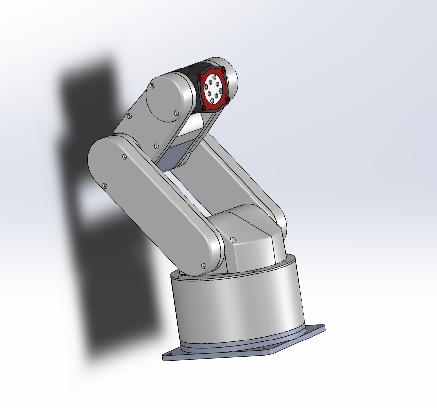
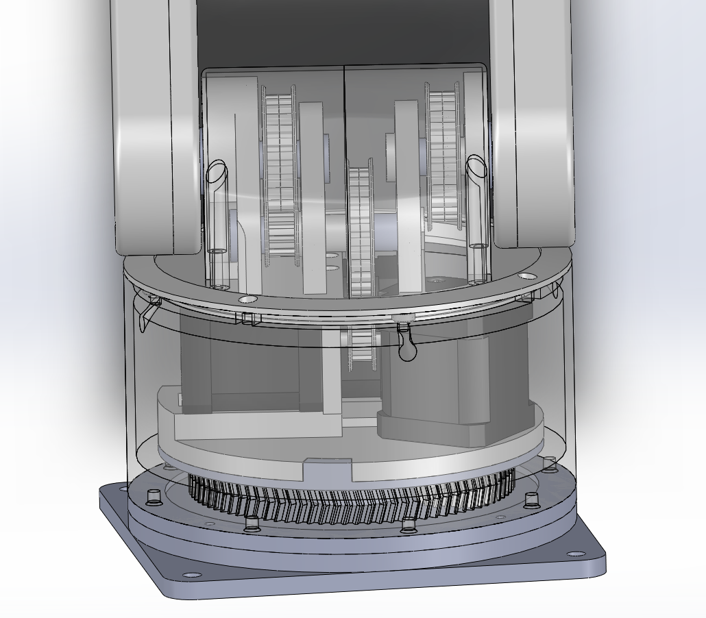
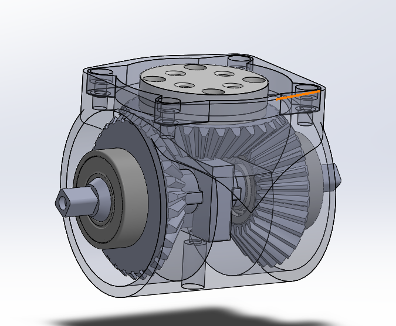
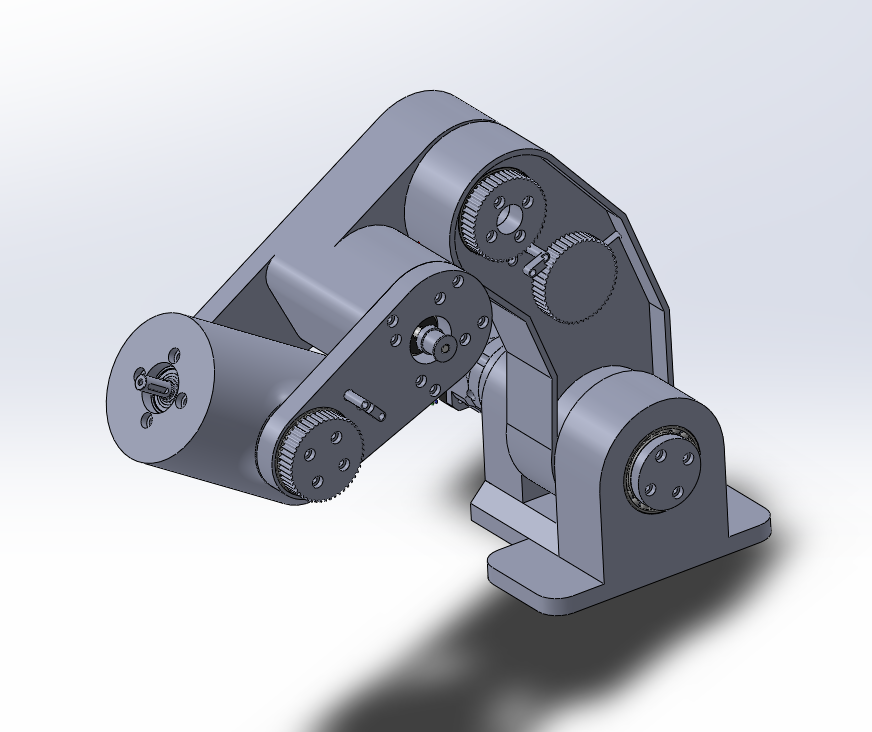
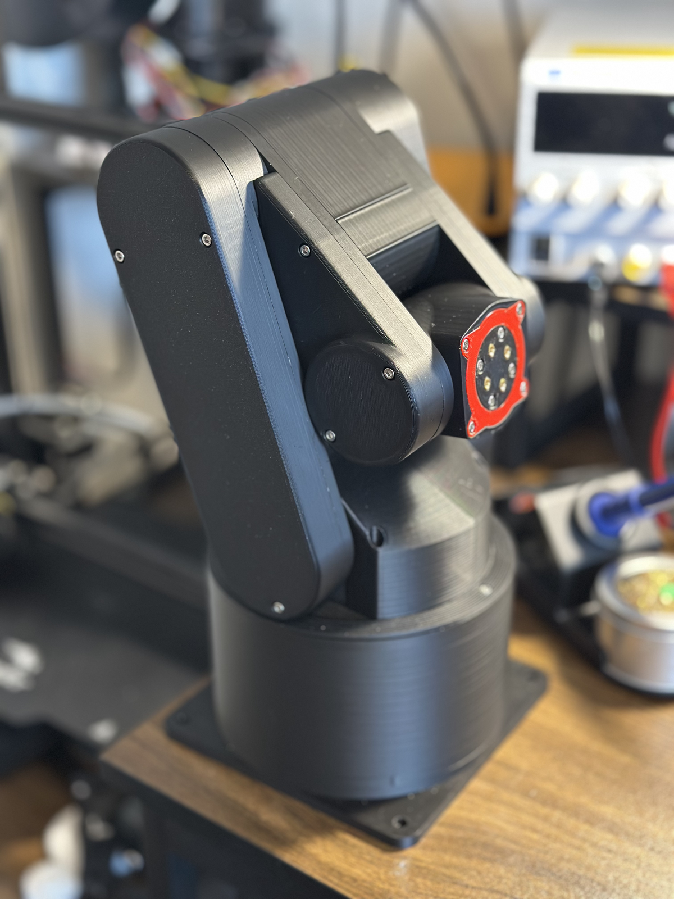
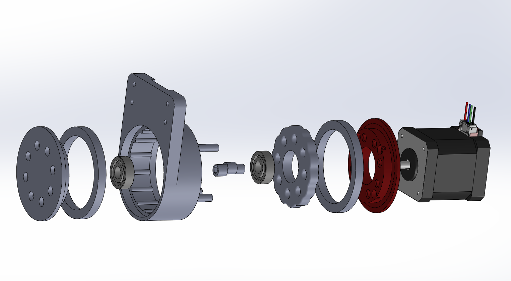
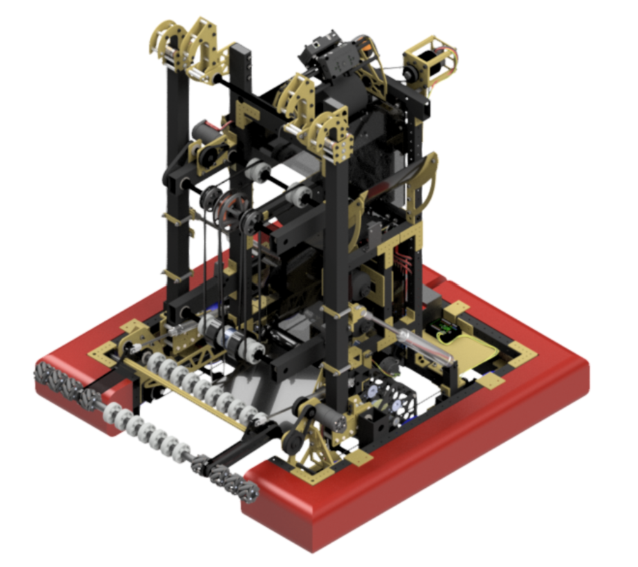
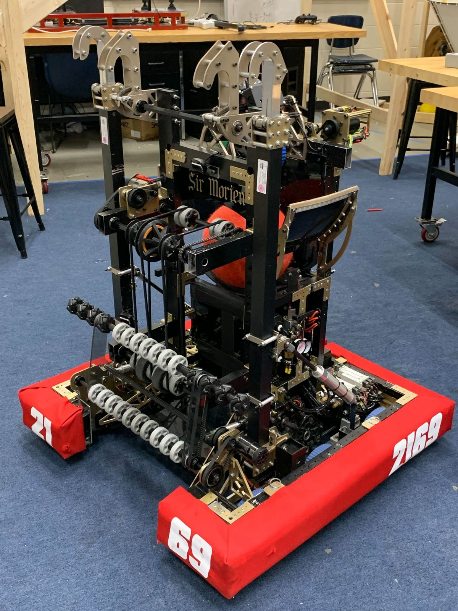
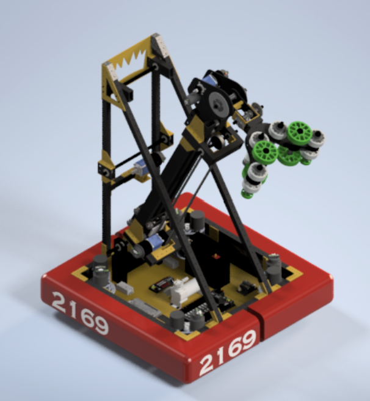
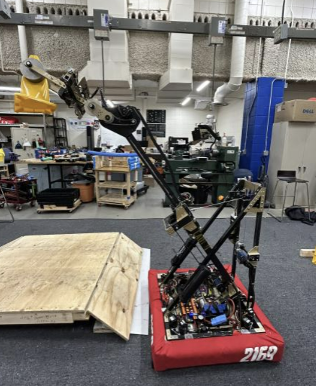

Robotics and mechanical design work, from a founder-led startup to competition robots to internship and team contributions.
Featured
Loon Industries
FOUNDER AND MECHANICAL LEAD. FOUNDED 2025. CURRENTLY DEVELOPING THE SECOND PROTOTYPE.
Finalist, Borgen Design Competition ($2,000 grant, UW–Madison)
I founded Loon Industries in 2025 with two colleagues who oversee software development. The company originated from a straightforward observation: access to robotics education is limited by cost. A capable robotic arm typically costs several thousand dollars, placing it out of reach for the students and hobbyists who stand to benefit most from hands-on experience. Our objective was to design a functional five-axis arm at a fraction of that cost. I have led the mechanical design for both versions built to date.
Loon 1.0: Initial Design
LOON 1.0, 2025
The design was governed by a fixed cost target: a $300 retail price and a $200 build cost. This constraint shaped nearly every design decision. The structure was designed almost entirely for 3D printing, with purchased components limited to bolts, bearings, and nuts.
Actuation was provided by three standard NEMA 17 motors (55 N·cm holding torque) and two pancake NEMA 17 motors (23 N·cm) for the wrist joints. All gear reduction used belt drives, the most cost-effective method available: two two-stage gearboxes, two single-stage gearboxes, and a planetary/ring gear system at the base. The most notable feature of this version is a differential mechanism integrated into the wrist, which produced two-axis wrist motion from a single coupled drive rather than requiring an additional motor.
The design targeted a payload of 0.5 lb and a reach of approximately 14 inches. A two-sided support structure eliminated cantilevered loading and simplified full enclosure of the electronics.
01Concept & CAD
02Print & Build
03Assembly & Wiring
04Test & Diagnose

Full assembly, CAD

Base & belt reduction, CAD

Wrist differential, CAD
The primary limitation of this design was part count. With 113 unique parts, mechanical complexity introduced measurable problems: shaft play accumulated across the staged belt gearboxes, reducing overall rigidity. In addition, the mechanical layout of the shoulder joint did not allow for position encoding without a substantial redesign.
Loon 1.1: Redesign
LOON 1.1, CURRENT
A payload of 0.5 lb proved insufficient for practical use cases. The target was revised to a $375 retail price and a $250 build cost, and the arm was redesigned from the ground up.
The primary change was replacing belt-driven reduction with purchased planetary gearboxes: two 25:1 units and one 10:1 unit, supplemented by three single-stage belt drives for the remaining joints. The base drive was changed from a ring gear system to a belt drive, and all belts were fitted with dedicated tensioners rather than relying on fixed spacing, directly addressing the shaft-play issue identified in Loon 1.0.
The shoulder-encoding limitation was resolved by relocating the encoder to the rear of each motor, paired with the motor driver, and integrating the system electronically through CAM rather than instrumenting the shaft mechanically.
The overall form factor was redesigned, which required removing the wrist differential used in Loon 1.0. To achieve a more compact footprint, two motors and their associated gearboxes are exposed rather than enclosed, a deliberate tradeoff of protection for reduced weight and size. Part count was reduced from 113 to approximately 20.
Process ChangeLoon 1.0 was fully designed prior to prototyping. For Loon 1.1, a rough but structurally representative prototype was built first to validate rigidity, with the remaining design refined based on the results.
01Redesign
02Rough Prototype
03Rigidity Test
04Refine (Ongoing)

New CAD layout

Current prototype
14"
reach, both generations
Cycloidal Gearbox Evaluation
Prior to selecting planetary gearboxes for Loon 1.1, I evaluated cycloidal gearboxes as an alternative reduction method, given their capacity for large reductions with minimal backlash. Three printed prototypes were built, and a commercial cycloidal gearbox was purchased and disassembled for reference. The evaluation concluded that a reliable 3D-printed cycloidal gearbox would be more costly and mechanically complex to produce than the resulting benefit justified at this scale. Planetary gearboxes were selected instead, informing the architecture of Loon 1.1.

Exploded view, CAD
Loon Industries is currently a finalist for a $2,000 grant through the University of Wisconsin–Madison's Borgen Design Competition, which would fund development of a six-axis arm.
Sir Morien: Junior Year
TEAM 2169, KING TeC. FRC. INDUSTRIAL DESIGN AWARD.
During my junior year of high school, I served as a mechanical design engineer and technician on Team 2169. That season's game required robots to shoot basketball-sized balls into a hopper 10 feet in elevation, using AprilTag vision detection for alignment, while remaining agile enough to maneuver around opposing robots. At the conclusion of each match, robots were required to climb a stepped, inclined structure.
I designed a two-way pneumatically actuated flywheel shooter capable of firing at the hopper or redirecting an opponent's ball, a climbing mechanism using a constant-force spring return and winch system with pneumatic dampening, and a two-speed transmission with a dog-shifting clutch. Design work was completed in Autodesk Inventor, supported by trajectory physics and load calculations for the climber and shooter.
01Design
02Build
03Competition

Full robot, CAD

Assembled robot
12th of ~40
both competitions
The robot received the Industrial Design Award. In retrospect, several design decisions warrant reconsideration. The reversible flywheel shooter required slowing and reversing spin direction to fire in the opposite direction, which substantially reduced cycle time; a single-direction shooter paired with a hopper-fed system would have been faster. The two-speed transmission introduced additional drivetrain complexity without a corresponding performance benefit. Overall drivetrain speed was insufficient for the pace the game required.
Lady Guinevere: Senior Year
TEAM 2169, KING TeC. FRC, CHARGED UP (2023). DESIGN INNOVATION AWARD.
As Mechanical Captain during my senior year, I was responsible for the complete mechanical design of the robot. That season's game, Charged Up, required robots to retrieve cones and cubes from the field, orient them, and place cones on vertical poles and cubes on elevated platforms. Most teams addressed the orientation requirement using a player-handling station that provided a pre-oriented, upright cone. My objective was to eliminate this dependency by designing a system capable of picking up a cone in any orientation directly from the ground.
This was accomplished with a swerve-drive drivetrain and a four-axis arm with a two-axis wrist, providing sufficient degrees of freedom to reach and reorient a cone regardless of its position. The arm extended over six feet horizontally, and the robot reached a height of 8.5 feet with the claw fully raised. The arm was actuated vertically by a winch-driven, single-stage extension system.
01Design
02Build
03Regionals
04World Championship

Full robot, CAD

Full extension, assembled
This design earned a Design Innovation Award and a qualification for the FIRST World Championship in Houston, Texas, where the team competed as a NASA-sponsored entry. Two limitations were identified for future iterations: the single-stage winch extension was slow relative to the size and weight of the arm, and the claw extended beyond the front bumper, leaving it exposed to contact from opposing robots during competition.